I have developed a love for coding and recently took the plunge at GA to turn my new passion in to a career. I now have experience with a range of front and back end technologies, as well as agile methodologies and an eye for design. Having worked in the service industry for many years, I am confident I have the interpersonal skills to fit in to any team.
I enjoy music - listening, playing and DJing - along with food, health and the occasional beer. I am eager to continue to learn and utilise my experience and skills in a new role.
Straight to Portfolio
Skills
- HTML & CSS
- JavaScript & jQuery
- NodeJS & AngularJS
- Bootstrap
- Ruby
- Ruby on Rails
- ExpressJS
- Sinatra
- TDD/BDD
- Agile Methodologies
- Pair Programming
- Version Control
- PostgreSQL & MongoDB
- Teamwork
- Leadership & Management
- Customer Service
- Proactivity
- 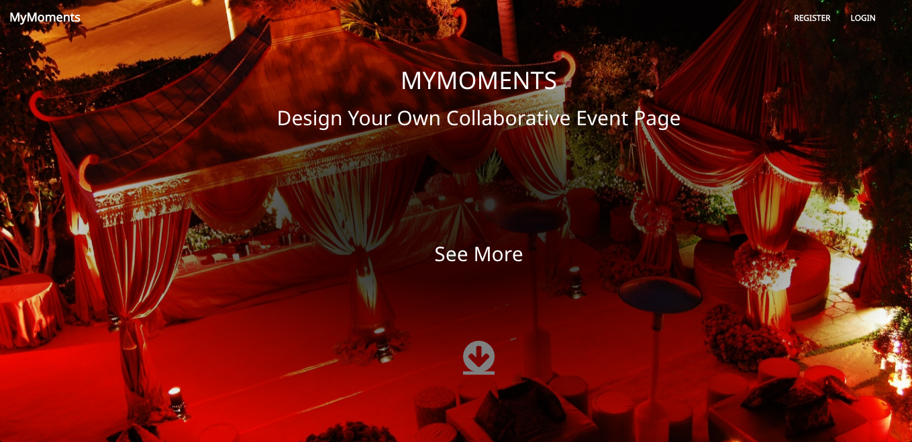
Go To Site
myMoments was inspired by a chaotic family lunch full of promises by family members to send photos to each other via social media and messaging services. Believing this would probably not happen and thinking there to be no 'go-to' service to share images for specific events, myMoments was born.
- 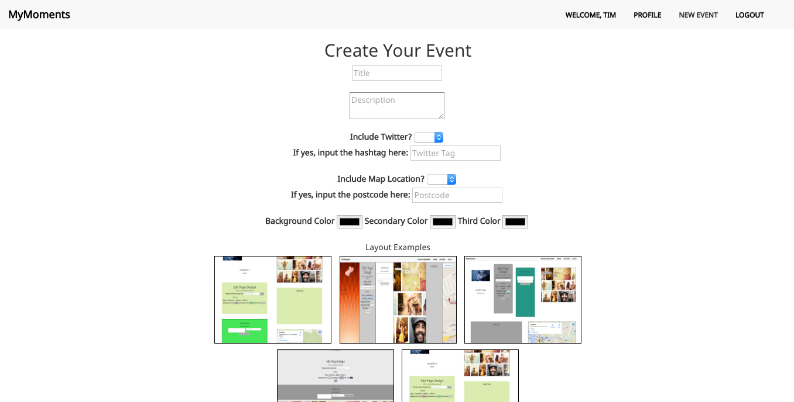
Go To Site
Built primarily using AngularJS, the site enables users to create events (form seen above) with customisable features - like color schemes, the ability to add a stream of tweets by hashtag, a map showing a specific postcode, header, and profile image.
- 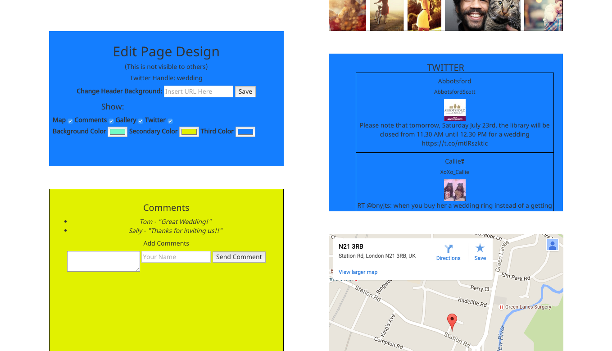Go To Site
Others can then visit the public URL and add to the guestbook, or upload images to the gallery. On this same page, the event creator can change the appearance and add/remove elements. Future versions will include more templates, a fully functional gallery for user uploads, and password protection of pages.
- 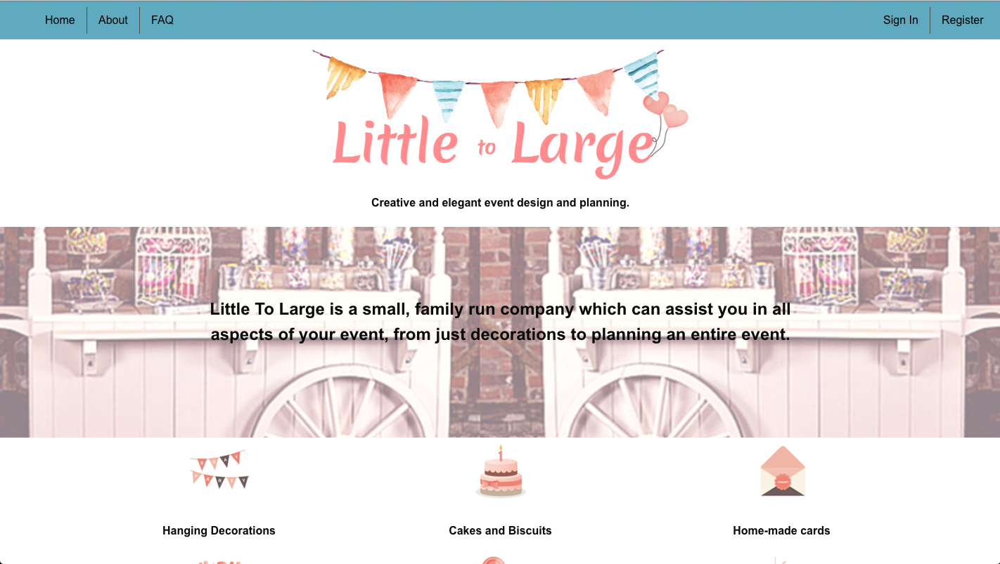
Go To Site
Flash was a group project built on Rails, and featuring live tracking with Geolacation and Google Maps. The idea was borne through group members recent bad experiences trying to get last minute tickets to en event. We set about to create an app which would register buyers and sellers of tickets, and track them by location Uber style - so transactions at events would be quick and easy.
 Go To Site
Go To Site
We aimed to allow a platform for ticket 'touting' or for people who have inadvertently have too many tickets to be able to sell and buy securely. Sellers can have a list of tickets available to sell, buyers can 'request' them, and it's status is changed to reserved. Once money is exchanged the seller can remove completely from the list. Buyers can see all sellers online at any one time, and see a list of tickets without signing up.
- 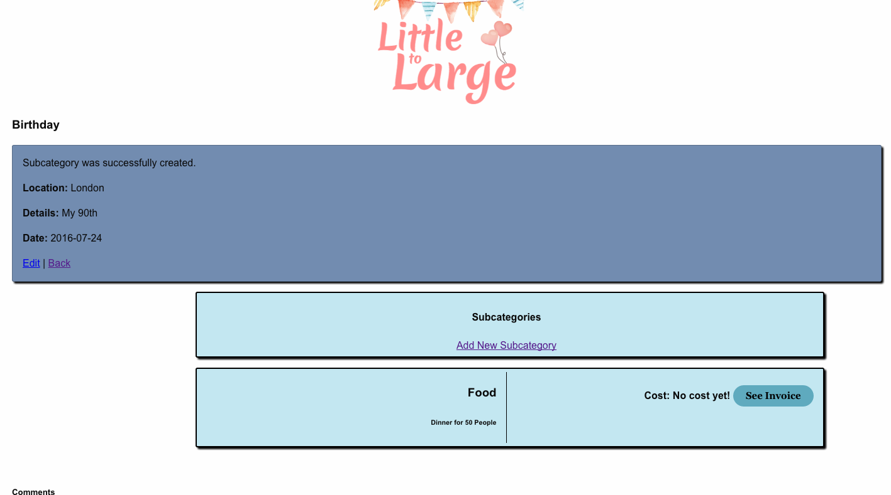Go To Site
Future goals include adding Stripe payments to the site, and rebranding to be a live buying and selling platform for other goods (perhaps market stalls, food, etc).
- 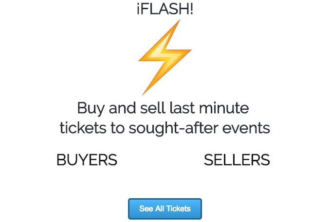
Go To Site
Flash! was a group project built on Rails, featuring live Geolocation tracking and Google Maps. The idea was borne through recent bad experiences trying to get last minute tickets to an event. We created an app which could register buyers and sellers of tickets, and track them by location 'Uber style' - so transactions at events would be quick and easy.
- 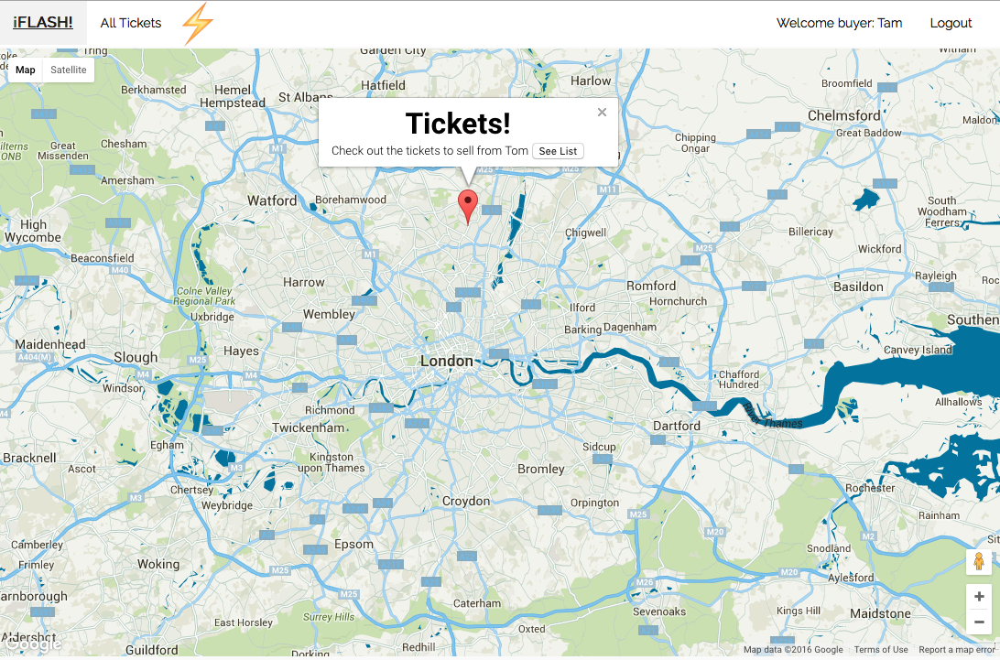
We aimed to allow a platform for people who have too many tickets to be able to sell securely. Sellers can have a list of tickets available, buyers can 'request' them, and the ticket status is changed to reserved. Once money is exchanged the seller can remove it completely from the list. Buyers can see all sellers online at any one time and see a list of tickets without signing up.
- 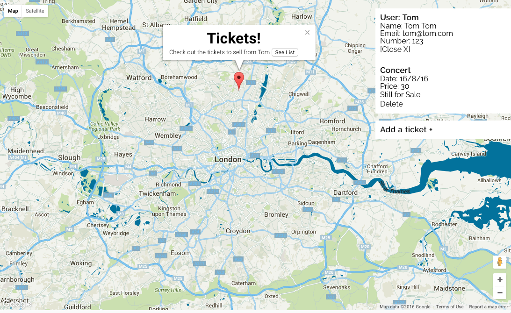Go To Site
Future goals include adding Stripe payments to the site, and rebranding to be a live buying and selling platform for other goods (perhaps market stalls, food, etc).
- 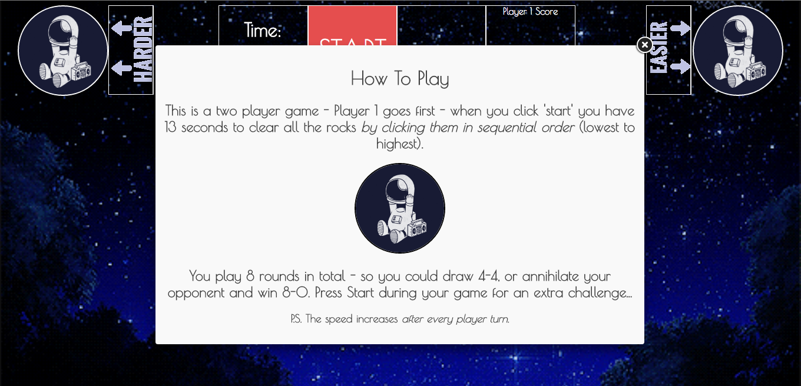
Go To Site
'Rock Smash' was my first ever project, a simple JS/Jquery game for play in the browser. The game builds on the classic 'Duck Hunt', with the extra difficulty being in having to destroy rocks in numerical order.
- 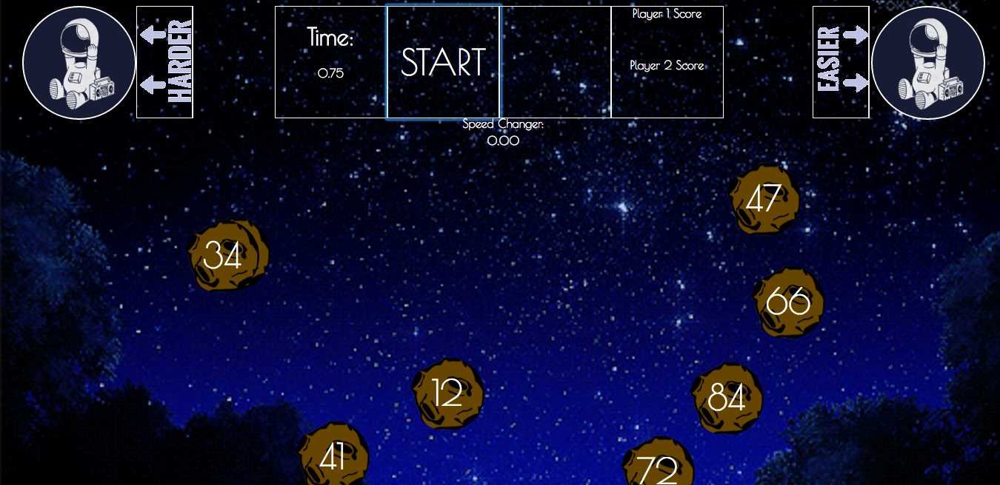
Go To Site
I added the ability to change the speed and play two players. Future versions will fix bugs, make the site more responsive and mobile friendly.
- 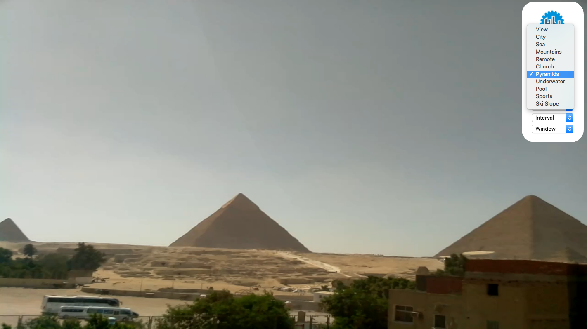
AmbeeMe was a project with a coursemate built in approximate 5 hours as part of a hackathon. It uses LIVE webcams to 'set the scene' - users can choose from different views and different soundscapes to be transported to another place.
- 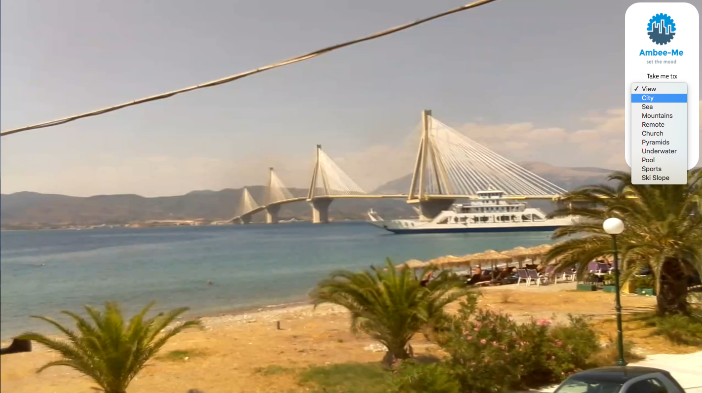
Unfortunately due to restrictions from the webcam provider, the functionality is reduced when hosted online. However the code is on my GitHub page if you want to take a look!